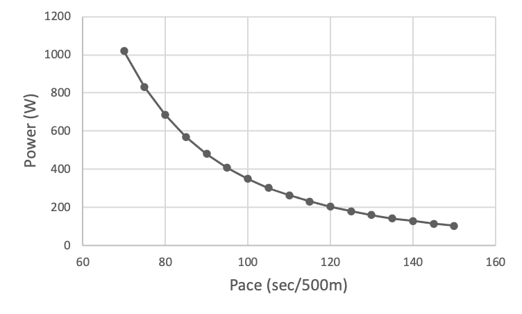
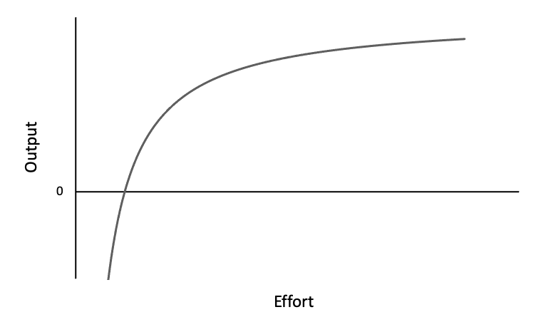
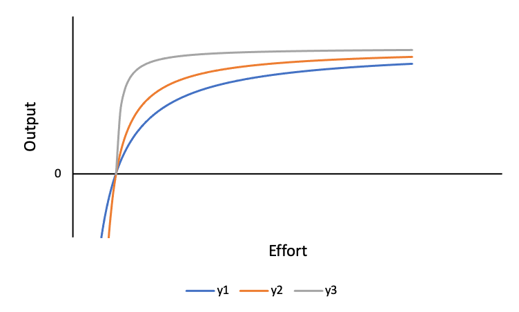

Acceleration, or lack thereof, on machines and in life.
Per The Physics of Ergometers, the "power is (approximately) related to the cube of the flywheel speed":
\[P = k \omega^{3}\]
Meaning that eight times the amount of power is required to increase the flywheel speed by two times, giving the following power vs. pace curve:
Increasing pace from 2:00 to 1:55 min per 500 m requires a 27 W power improvement, whereas increasing pace from 1:25 to 1:20 min per 500 m requires a 114 W power improvement. In other words, a 4.2% increase in pace requires a 13.3% increase in power, whereas a 5.9% increase in pace requires a 20% increase in power. What can't be accurately factored into the calculation is the toll that the upper ranges of power places on the athlete compared to lower ranges. Fatigue sets in exponentially faster.
For cycling, power (effort) vs. speed (output) is also a cubic function:
One of the scary implications of this equation is that at high speed, the power you have to produce is proportional to the cube of your velocity. So, to increase your speed by 25%, you need to nearly double your wattage!
MPG For Speed gives an overview of the effect speed has on gas consumption and total commute time. Given a daily 20-mile highway commute with a 30-highway-mpg car and gas prices at $4.00/gal, the following table and message is outputted:
| Speed | Daily Travel Time | Effective MPG | Cost/day | Cost/year |
|---|---|---|---|---|
| 55 MPH | 22 min. | 30.0 | $2.67 | $974.55 |
| 60 MPH | 20 min. | 29.1 | $2.75 | $1,003.75 |
| 65 MPH | 18 min. | 27.6 | $2.90 | $1,058.50 |
| 70 MPH | 17 min. | 24.9 | $3.21 | $1,171.65 |
| 75 MPH | 16 min. | 23.1 | $3.46 | $1,262.90 |
| 80 MPH | 15 min. | 21.6 | $3.70 | $1,350.50 |
Your bottom line: If you normally travel at 75 mph, you could be saving yourself $259.15 per year if you drove at 60mph - and you'd only be making your [daily] total commute 4 minutes longer.
These three cases are examples of what I broadly refer to as the output vs. effort curve (or, to be a bit proud, Ethan's Output-Effort Curve), which takes many shapes depending on the application, but often follows the trajectory of an asymptotic function in quadrant I with a positive x-intercept. The generic curve looks like:
\[\text{O(E)} = -\frac{Y(M-E)}{E}\] Where:
There are a few points to make about this curve.
First, there is a minimum effort required to produce an output. The curve doesn't exist at \(E = 0\). It only exists beginning at \(E > 0\) and output only becomes positive at \(E > M\). Growth only happens with sufficient stimulation. Doing a couple of push-ups a day won't produce results. Studying a language for 30 minutes won't produce results. There is a minimum threshold for everything that involves effort and output.
Second, there exist negative outputs for \(E < M\). This output exists more in the mental realm rather than the physical. Putting in effort and seeing no tangible results drains motivation, decreasing the likelihood of effort being expended in the future, making regression (or negative output) more likely. Positive output reinforces the effort being put in, zero output teaches it isn't worth it.
Third, as in the examples, most progress towards higher outputs are made at lower effort levels, whereas there are diminishing returns at higher effort levels. There is no universal sweet spot, as it changes on an individual basis (both in regards to the person and the activity).
Another case of diminishing returns is seen when attempting to accelerate while already going fast. That extra burst of effort will do little to improve speed.
The time spent going fast should (probably) not be spent trying to go faster, but in other, more productive ways.
First, notice how that speed was attained. Was significant effort applied? Did gravity do most of the work? Was there some maneuvering and finesse between obstacles that allowed for speed to pick up? A combination of all three or two? Review is a huge part of my productivity philosophy, and it's incredibly applicable here. Learning and subsequently practicing how to get up to speed efficiently is key to increasing the initial part of the curve.
See the similar curves above. All of them have the same minimum effort needed to produce results and same limit. y1 is the same curve from the original graph. However, y2 and y3 both close to peak output much faster than y1. Learning, reviewing, and practicing helps to facilitate this. Strength work as related to endurance work is a prime example: athletes with stronger X (e.g., legs for cyclists) can output power faster and at a lower effort level.
Second, is there a way to decrease effort while maintaining speed or increasing speed while maintaining effort? Relaxing, delegating, or changing positions are all low-energy actions that can make a difference in the long run.
To attack on the climb or not?
There are two schools of thought. On one hand, attacks while in competition are a potent psychological weapon. Competitors see an ever-increasing effort (of course it has to stop somewhere) and wonder where the asymptote is. On the other hand, the risk of burning out before reaching the top is greatly increased, possibly shifting the entire curve down and stretching it out (i.e., the same effort as before gives lower output) for the remainder of the effort.
Understand that output does not scale linearly with effort. It will taper off at some point.
Recognize the existence of \(M\) and when nothing is being outputted, question the amount of effort being applied.
Review previous efforts and look for ways to more efficiently reach a certain output value.
Get past the apex of Ethan's Output-Effort Curve and turn on cruise control. Any more effort put forth can likely be used elsewhere.
Total effort is limited by both energy and time. Only so many objectives can be worked on at any given time. Choose wisely.